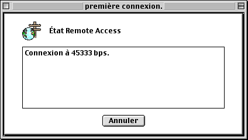
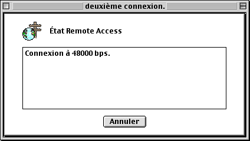

Connexion plus rapideCet astuce je l'applique tous les jours et je peux vous dire que c'est super utile. Bon au depart y faut vous connecter et des que vous etes connectes vous vous deconnectez et pis vous vous reconnectez. C'est tout et ca marche p'tet sur PC. Mais n'essaye quand meme pas de faire ca 36 000 fois si ca marche pas et pis vous pourrez p'tet retombe a un debit moins eleve. J'vous conseille de faire la manip' une fois c'est tout. Photos prises sans trucages et pis d'ailleurs j'ai qu'ca a foutre truquer des photos. Premiere Connexion :
 Deuxieme Connexion :  Inferno_of_Dante |